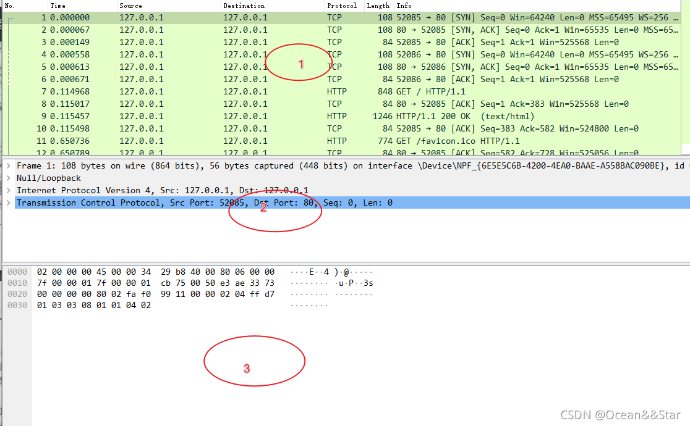
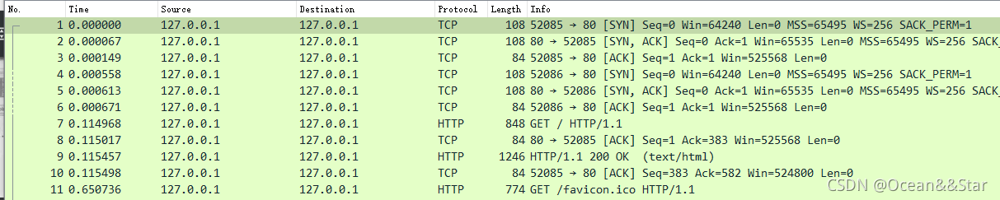
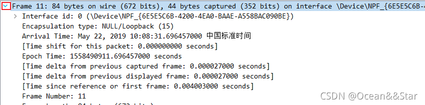
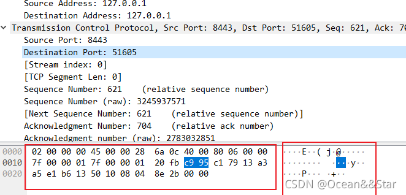

协议/漏洞/网络
从头到尾再来一遍的感觉吧
一、协议相关
网络通信协议是根据网络上的节点进行通信的一组规则，每种设备都可以根据通信协议识别其他设备的信息。
OSI七层模型
要讲网络协议 我们得先从OSI七层模型说起 OSI将网络通信分为七个层次 每个层次负责特定的功能 并且每个层次都与特定的协议相关联
它们分别为物理层、数据链路层、网络层、传输层、会话层、表示层和应用层
- 物理层：把网络连接在一起的物理手段 负责传送0与1的电信号
- 数据链路层：决定0与1的解读 分组方式 相关协议:ARP协议
- 网络层：引进一套新的地址——“网络地址” 使得我们能区分不同的计算机是否属于同一个子网络 建立主机到主机的通信 相关协议：IP、ICMP协议
- 传输层：有了MAC地址和IP地址 我们还需要一个参数 表示这个数据包到底供哪个程序来使用 这个参数就叫’端口’ 实现端口到端口的通信 相关协议：TCP、UDP协议
- **会话层：负责建立和断开通信连接，以及数据的分割等传输相关的管理 （例：何时建立连接？何时断开连接？该保持多久的连接？）**相关协议：SSL、TLS协议
- 表示层：设备固有的数据格式与网络标准数据格式之间的转换 （接受不同的信息，例如文字流、图像、声音等）
- 应用层：针对特定应用的协议 网络服务与最终用户的一个接口 相关协议：HTTP、FTP、DNS、DHCP等协议

HTTP协议 端口号80 HTTPS协议 端口号443
Web交互的基本流程
请求：客户端根据服务器地址把数据发送给服务器的过程叫请求。
响应：服务器将请求的处理结果发送给浏览器的过程叫响应。
什么是HTTP？
概念：超文本传输协议。
HTTP有什么特点？
简单和灵活：
- HTTP协议使用简单的请求-响应模型，通信过程直观明了。它支持各种数据格式和内容类型，使得可以在网络上传输各种类型的数据。
无连接和无状态：
- HTTP协议是无连接的，即每次请求都是独立的，服务器不会保持与客户端的连接状态。同时，HTTP是无状态的，服务器不会保存请求之间的状态信息，每个请求都是独立的，这使得HTTP协议具有简单性和可伸缩性，但同时需要通过其他机制（如Cookie、Session）来管理用户状态。
基于文本：
- HTTP协议的请求和响应都是基于文本的，使用ASCII字符进行通信，这使得HTTP消息可以被直接查看和调试。
支持客户端-服务器模式：
- HTTP协议基于客户端-服务器模式，客户端发送请求，服务器返回响应。这种模式灵活且符合互联网应用的需求。
支持缓存机制：
- HTTP协议支持缓存机制，可以通过缓存技术减少网络传输，提高性能和用户体验。
扩展性：
- HTTP协议具有良好的扩展性，支持通过标头（Header）字段传递各种自定义信息，可以实现更复杂的功能和应用。
HTTP有什么作用？
传输网页和超文本内容：
- HTTP协议最基本的作用是传输网页和超文本内容。通过HTTP，浏览器可以向服务器请求网页，服务器则返回包含HTML、CSS、JavaScript等内容的响应，完成页面的展示和渲染。
传输各种类型的数据：
- 除了网页，HTTP还可以传输各种类型的数据，如图像、音频、视频、文件等。HTTP支持多种内容类型和数据格式，使得互联网上的资源能够以统一的方式进行访问和传输。
实现客户端和服务器之间的通信：
- HTTP作为客户端和服务器之间的通信协议，使得客户端能够向服务器发送请求并接收响应。这种通信模式支持了各种互联网应用的实现，如浏览器访问网页、移动应用与服务器通信等。
支持Web应用的交互：
- HTTP协议支持通过请求和响应实现Web应用的交互功能，如用户登录、数据提交、状态管理等。
在网络通信中，请求头（Request Header）和响应头（Response Header）是HTTP协议中的重要部分，用于在客户端和服务器之间传递关于请求或响应的元数据信息。下面是它们的作用和常见字段的含义：
请求头（Request Header）
请求头包含了客户端向服务器发送的请求的附加信息，这些信息描述了请求本身的性质、格式、认证信息等。常见的请求头字段包括：
User-Agent
- 含义：标识了发起请求的用户代理（通常是浏览器或应用程序）的相关信息，如操作系统、浏览器类型和版本号等。
Host
- 含义：指定被请求资源的主机名和端口号。
Accept
- 含义：指定客户端可接受的内容类型，用于服务器返回合适的响应。
Content-Type
- 含义：指定请求体的MIME类型，告诉服务器请求中的内容格式是什么样的。
Authorization
- 含义：包含用于对请求进行身份验证的凭据，通常用于发送身份验证信息（如基本认证或令牌）。
响应头（Response Header）
响应头包含了服务器对客户端请求的响应的元数据信息，用于描述响应的属性、类型、缓存设置等。常见的响应头字段包括：
Content-Type
- 含义：指定响应体的MIME类型，告诉客户端响应的内容格式是什么样的。
Content-Length
- 含义：指定响应体的长度，以字节为单位。
Cache-Control
- 含义：控制缓存的行为，例如是否缓存响应、缓存的有效期等。
Set-Cookie
- 含义：在响应中设置Cookie，将会在客户端保存，用于跟踪会话状态或其他状态信息。
Location
- 含义：用于重定向，指示客户端应该跳转到的新位置。
其他常见字段
除了上述字段外，还有许多其他常见的请求头和响应头字段，用于控制和描述HTTP请求和响应的各个方面。例如：
- Date：指定消息创建的日期和时间。
- Server：指示服务器的软件信息。
- ETag：用于缓存验证，表示资源的标识符。
- Referer：指示请求的来源页面 URL。
- Connection：控制连接的选项，如保持长连接或关闭连接等。
这些请求头和响应头字段的合理设置和使用，能够有效地控制HTTP请求和响应的行为，提高通信的效率和安全性。
ARP协议
ARP协议的核心作用是在局域网内解析IP地址到MAC地址的映射关系，帮助设备确定数据包的接收方，从而实现有效的网络通信。
DNS协议 / 端口号53
域名解析协议（DNS，Domain Name System）的用途是将域名和 IP 地址相互映射
二、漏洞相关
讲讲漏洞的 成因 攻击方式/类型 预防方式
SQL注入漏洞
产生原因
本质上是程序员没有遵循代码与数据分离原则 使用户数据作为代码执行
当web应用向后台数据库传递SQL语句进行数据库操作时，如果对用户输入的参数没有经过严格的过滤处理，那么攻击者就可以构造特殊的SQL语句，直接输入数据库引擎执行，获取或修改数据库中的数据。
攻击方式/类型
类型有 字符型或者数字型
- get注入
在get传参时写入参数，将SQl语句闭合，后面加写入自己的SQL语句。 - post注入
通过post传参，原理与get一样，重要的是判断我们所输入的信息是否与数据库产生交互，其次判断SQL语句是如何闭合的。 - 有些网站通过查询cookie判断用户是否登录，需要与数据库进行交互，我们可以修改cookie的值，查找我们所需要的东西。或者通过报错注入是网页返回报错信息。
- Referer注入
Referer正确写法应该是Referrer,因为http规定时写错只能将错就错，有些网站会记录ip和访问路径，例如百度就是通过Referer来统计网站流量，我们将访问路径进行SQL注入，同样也可以得到想要的信息。 - XFF注入
在用户登录注册模块在 HTTP 头信息添加 X-Forwarded-for: 9.9.9.9’ ，用户在注册的时候，如果存在安全隐 患，会出现错误页面或者报错。从而导致注册或者登录用户失败。
burpsuite 抓包，提交输入检测语句：
1 | X-Forwarded-for: 127.0.0.1'and 1=1# |
- UA注入：输入点在User-Agent
sql语句相关
1 | show databases; //显示数据库列表 |
如何预防
为了防止 SQL 注入攻击，可以采取以下几种防御方式：
- 使用参数化查询（Prepared Statements）：
- 使用参数化查询是最有效的防御 SQL 注入的方法之一。参数化查询使用占位符（如
?）代替直接将用户输入嵌入到 SQL 查询中，然后将参数与查询分离，确保用户输入不会被当作 SQL 代码执行。
- 使用参数化查询是最有效的防御 SQL 注入的方法之一。参数化查询使用占位符（如
- 输入验证与过滤：
- 对于用户输入的数据，进行严格的输入验证和过滤，只接受预期的数据格式和范围。例如，对于数字输入，确保只包含数字字符；对于字符串输入，可以使用白名单过滤非法字符。
- 在应用程序的前端和后端都进行输入验证，防止恶意输入进入系统。
- 最小权限原则（Least Privilege Principle）：
- 遵循最小权限原则，为数据库用户分配最小必要的权限。应用程序连接数据库时，使用有限权限的数据库账号，避免使用具有过高权限的账号。
- 避免拼接 SQL 语句：
- 避免将用户输入直接拼接到 SQL 查询语句中。即使对于动态构建的查询，也应该使用参数化查询或者安全的 ORM（对象关系映射）工具，而不是手动拼接字符串。
- ORM 框架的使用：
- 使用 ORM 框架（如Hibernate、Entity Framework等）可以帮助自动化地处理数据库访问和数据映射，减少手动编写 SQL 查询的机会，从而降低 SQL 注入的风险。
- 安全编码实践：
- 培训开发人员和测试人员，提高他们对安全编码的认识，编写安全的代码和进行安全审计。
- 定期更新和维护应用程序和数据库系统，及时修复已知的安全漏洞。
- 监控与日志记录：
- 实施安全监控和日志记录机制，及时发现和响应潜在的 SQL 注入攻击行为。
- 安全审计：
- 定期进行安全审计和漏洞扫描，及时发现并修复存在的安全问题。
文件上传漏洞
漏洞成因
文件上传漏洞是指由于程序员在对用户文件上传部分的控制不足或者处理缺陷，而导致的用户可以越过其本身权限向服务器上上传可执行的动态脚本文件。这里上传的文件可以是木马，病毒，恶意脚本或者WebShell等。“文件上传”本身没有问题，有问题的是文件上传后，服务器怎么处理、解释文件。如果服务器的处理逻辑做的不够安全，则会导致严重的后果。
攻击方式/类型
主要在于一句话木马的组成方式
1 | <?php eval($\_POST['cmd']);?> |
随后把包含该内容的php文件上传至服务器 利用中国菜刀 蚁剑等软件连接即可
防御方式
检查文件类型 检查文件大小 传文件后更改文件名称 对文件内容进行检查与过滤
文件包含漏洞
漏洞成因
和SQL注入等攻击方式一样，文件包含漏洞也是一种注入型漏洞，其本质就是输入一段用户能够控制的脚本或者代码，并让服务端执行。
什么叫包含呢？以PHP为例，我们常常把可重复使用的函数写入到单个文件中，在使用该函数时，直接调用此文件，而无需再次编写函数，这一过程叫做包含。
有时候由于网站功能需求，会让前端用户选择要包含的文件，而开发人员又没有对要包含的文件进行安全考虑，就导致攻击者可以通过修改文件的位置来让后台执行任意文件，从而导致文件包含漏洞。
以PHP为例,常用的文件包含函数有以下四种
include(),require(),include_once(),require_once()
区别如下:
require():找不到被包含的文件会产生致命错误，并停止脚本运行
include():找不到被包含的文件只会产生警告，脚本继续执行
require_once()与require()类似:唯一的区别是如果该文件的代码已经被包含，则不会再次包含
include_once()与include()类似:唯一的区别是如果该文件的代码已经被包含，则不会再次包含
攻击方式/类型
分为 本地文件包含漏洞 与 远程文件包含漏洞
本地文件包含的话 可以利用绝对路径来获取账号信息 又或者读取服务器文件
在传参中加入若干个../与etc/passwd来看账号信息
如果PHP的配置选项allow_url_include、allow_url_fopen状态为ON的话，则include/require函数是可以加载远程文件的，这种漏洞被称为远程文件包含
这样的话可以下载远程网站的脚本 联合csrf攻击 或者执行远程代码
如何防御
本地：输入验证和过滤 限制用户访问范围 使用白名单机制限制允许包含的文件或目录列表 只允许应用程序包含受信任的文件
远程：关闭allow_url_include、allow_url_fopen等配置
命令执行漏洞
漏洞成因
命令执行漏洞是指服务器没有对执行的命令进行过滤，用户可以随意执行系统命令，命令执行漏洞属于高危漏洞之一
如PHP的命令执行漏洞主要是基于一些函数的参数过滤不足导致，可以执行命令的函数有system( )、exec( )、shell_exec( )、passthru( )、pcntl_execl( )、popen( )、proc_open( )等，当攻击者可以控制这些函数中的参数时，就可以将恶意的系统命令拼接到正常命令中，从而造成命令执行攻击
PHP执行命令是继承WebServer用户的权限，这个用户一般都有权限向Web目录写文件，可见该漏洞的危害性相当大
假使有一个ping ip的网站 而输入框没有屏蔽; || | && &等管道符 导致了恶意代码的运行 这就是命令执行漏洞
攻击方式/类型
1 | 管道符的区别 |
一般与linux命令 find 一同执行
find 目录(一般为/ 根目录) -name(限制条件为名称) ‘flag.txt’
如何防御
过滤管道符 使用白名单机制对输入内容进行限制
XSS&CSRF漏洞
漏洞成因
XSS：未对输入框中的内容进行严格过滤 导致恶意用户能够在网页中注入恶意的脚本代码 这些恶意脚本在被其他用户访问时会在其浏览器中执行 从而达到攻击的目的
CSRF：应用程序没有对用户的请求进行有效的验证和授权，攻击者可以伪装用户身份向应用程序发送恶意请求，利用用户在应用程序中的登录状态或会话。
攻击类型/方式：
XSS漏洞
- 存储型 XSS：攻击者将恶意脚本存储到服务器上的数据库或文件中，当其他用户访问包含恶意脚本的页面时，恶意脚本被从服务器检索并执行。
- 反射型 XSS：攻击者将恶意脚本作为参数包含在URL中，当用户点击包含恶意参数的链接时，恶意脚本会从URL中反射到用户的浏览器中执行。
CSRF漏洞
- 基于表单的CSRF：攻击者诱使用户在已经登录的情况下访问包含恶意表单的页面，当用户提交表单时，实际上是提交了恶意请求。
- 基于图片的CSRF：攻击者将恶意请求隐藏在图片URL中，当用户加载包含恶意图片的页面时，实际上是触发了恶意请求。
- 基于链接的CSRF：攻击者诱使用户点击包含恶意请求的链接，以触发恶意操作。
防御方式
XSS：输入验证/转义 使用安全的http标头
CSRF：验证用户来源 生成随机验证token
三、网络相关
Wireshark是一款用于监听网络的软件
wireshark有三个面板：
- packet list面板
- packet details面板
- packet bytes面板

这三个面板之间是相互关联的：
如果希望在packet details面板中查看一个单独的数据包的具体内容，必须在packet list面板中单机选中那个数据包
选中该数据包之后，才可以通过在packet deatils面板中选择数据宝的某个字段进行分析，从而在packet bytes面板中查看相应字段的字节信息packet list
packet list面板：以表格的形式显示了当前捕获文件中的所有数据报，从下面可以看出，一共有7列：
No（Number列）：包的编号
默认wireshark是按照数据包编号从低到高排序
该编号不会发生改变，即使使用了过滤也同样如此
Time列：包的时间戳。时间格式可以自己设置
Source列和Destination列：包的源地址和目的地址
Protocol列：包的协议类型
Length列：包的长度
Info列：包的附加信息
packet details
packet details面板：分层的显示了一个数据包中的内容，并且可以通过展开或者收缩来显示这个数据包中所捕获的全部内容

默认数据详细信息都是合并的，如果要查看，可以单击每行前面的箭头：
packet bytes
packet bytes面板：
- 显示了一个数据包未经处理的原始样子，也就是它在链路上传播时的样子。
- 在该面板中的数据是以16进制和ASCII格式显示了帧的内容
- 当在packet details面板中选择任意一个字段后，在packet bytes面板中包含该字段的字节也高亮显示。

1. 协议过滤器
- 过滤特定协议：
http：显示所有HTTP协议的数据包。tcp：显示所有TCP协议的数据包。udp：显示所有UDP协议的数据包。icmp：显示所有ICMP协议的数据包。
2. IP地址和端口过滤器
- 过滤源或目标IP地址：
ip.addr == 192.168.1.100：显示源或目标IP地址为192.168.1.100的数据包。
- 过滤源或目标端口：
tcp.port == 80：显示目标或源端口为80的TCP数据包。udp.port == 53：显示目标或源端口为53的UDP数据包。
3. 数据包方向和流量类型过滤器
- 过滤数据包方向：
src host 192.168.1.100：显示源IP地址为192.168.1.100的数据包。dst host 192.168.1.100：显示目标IP地址为192.168.1.100的数据包。src net 192.168.1.0/24：显示源IP地址属于192.168.1.0/24子网的数据包。
- 过滤流量类型：
tcp.flags.syn == 1：显示带有TCP SYN标志的数据包（用于TCP连接建立）。tcp.flags.ack == 1：显示带有TCP ACK标志的数据包（用于确认）。
4. 组合过滤器
- 组合多个条件：
ip.addr == 192.168.1.100 && tcp.port == 80：显示源或目标IP地址为192.168.1.100且目标或源端口为80的数据包。tcp.flags.syn == 1 && ip.addr == 192.168.1.100：显示源或目标IP地址为192.168.1.100且带有TCP SYN标志的数据包。
5. 其他过滤器
- 过滤特定协议的字段：
http.request.method == "GET"：显示所有HTTP GET请求的数据包。http.response.code == 200：显示所有HTTP响应码为200的数据包。